Jun 8, 2015 (last update: Jun 9, 2015)
10 tips to be productive in CLion, a cross-platform C/C++ IDE
Score: 4.1/5 (85 votes)
Judging from my own experience as a developer, many C/C++ developers dismiss the idea that an IDE can make them more productive. Because what could be better than the simple and quick Vim or Emacs? Well, let me show you. These 10 CLion tips can take you to a new level of productivity, by letting you focus on the important and complicated tasks while the IDE handles routine jobs for you.
Before we start, let me introduce you to CLion, a new cross-platform IDE for developing in C and C++, created by JetBrains. It natively supports C and C++, including the C++11 standard (with some small limitations), libc++ and Boost. It correctly handles macros and templates and can work with GCC or Clang (on Windows you’ll need either MinGW/MinGW-w64 or Cygwin), GDB as a built-in debugger, and CMake as a build system and project model. In addition to C/C++, you can also use JavaScript, XML, HTML and CSS with the same level of code editing and transformation features such as syntax highlighting, analysis, completion, navigation, and refactorings.
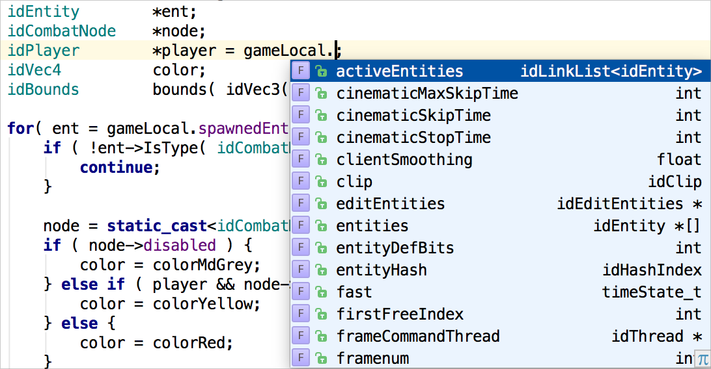
Very often we need only smth with type
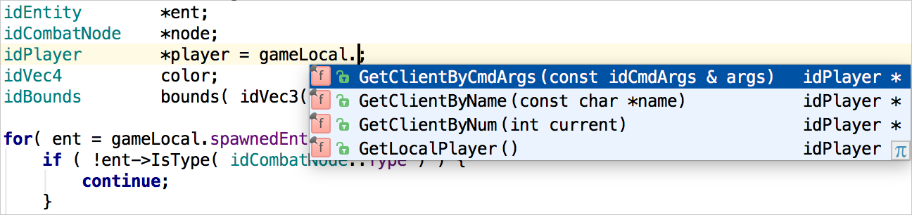
Oh, and if only one possible option is found, you’ll get it completed immediately!
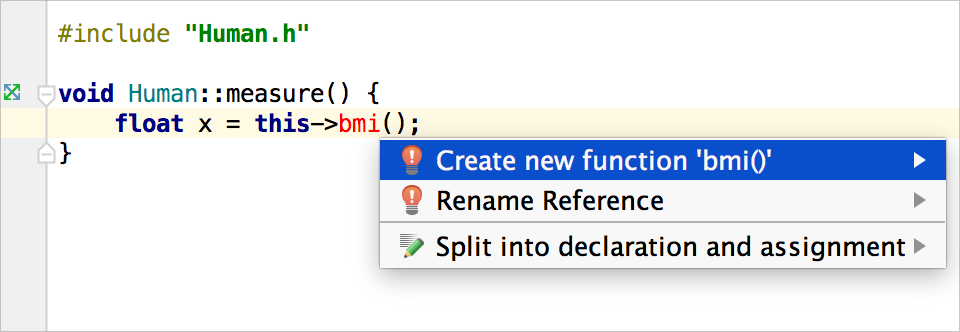
The declaration and definition will appear immediately in your code:

The same works for variables and class names:
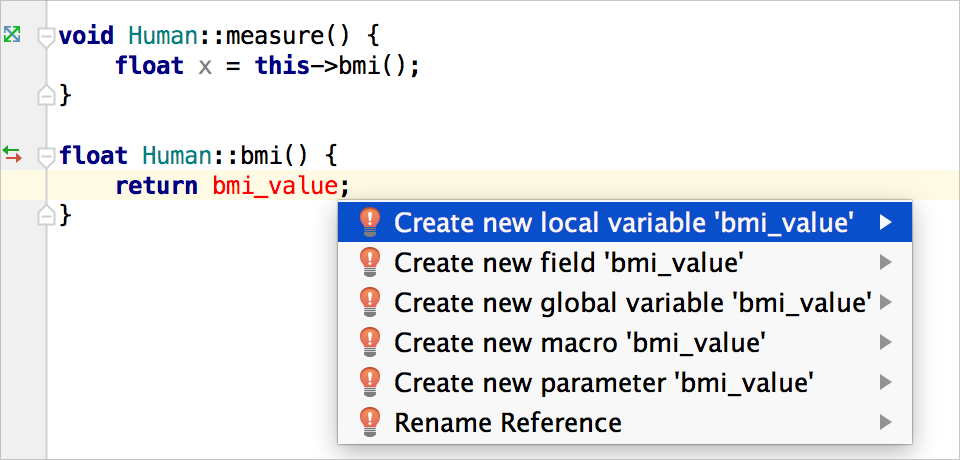
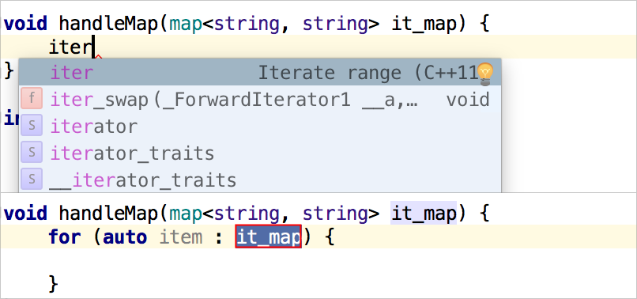
To go deeper, CLion lets you create custom Live Templates or ‘Surround With’ templates (which quickly wrap a selected code with a construct). For example, here’s a quick way to get a class that inherits from another existing class:

After adding a new ‘cp’ template, I can type
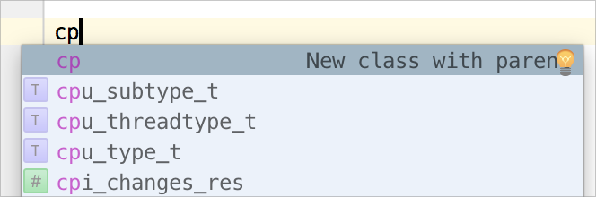
The template description is shown in the completion drop-down list. By pressing Tab I got my template expanded. Now I can provide a new class name, and then select a parent class and a modifier for it from the completion list:
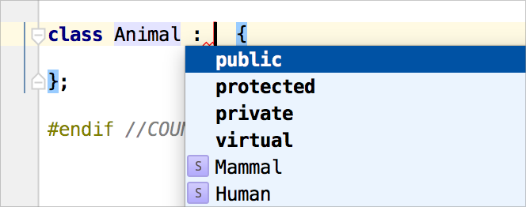
Voila! We got a new class.
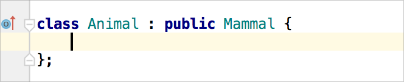
Of course you can generate more complicated templates, possibly including a
To that end, CLion provides you with a wide range of code navigation options:
Call Hierarchy is my favorite. It lets me see the whole call stack with all the branches in details. Looks so simple, isn’t it? With a single click you can navigate to the appropriate place in editor, or use Autoscroll to Source to make it even quicker:
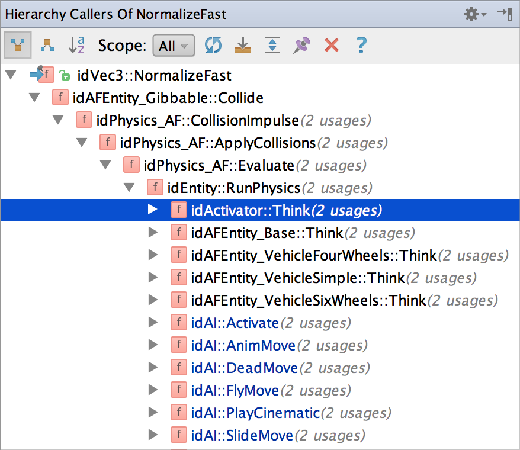
Let me illustrate exactly how reliable it is. Assume we have this function and its usage:
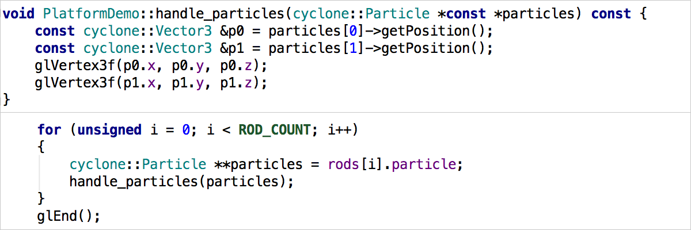
To add an extra parameter to this function, I’ll use the Change Signature refactoring:
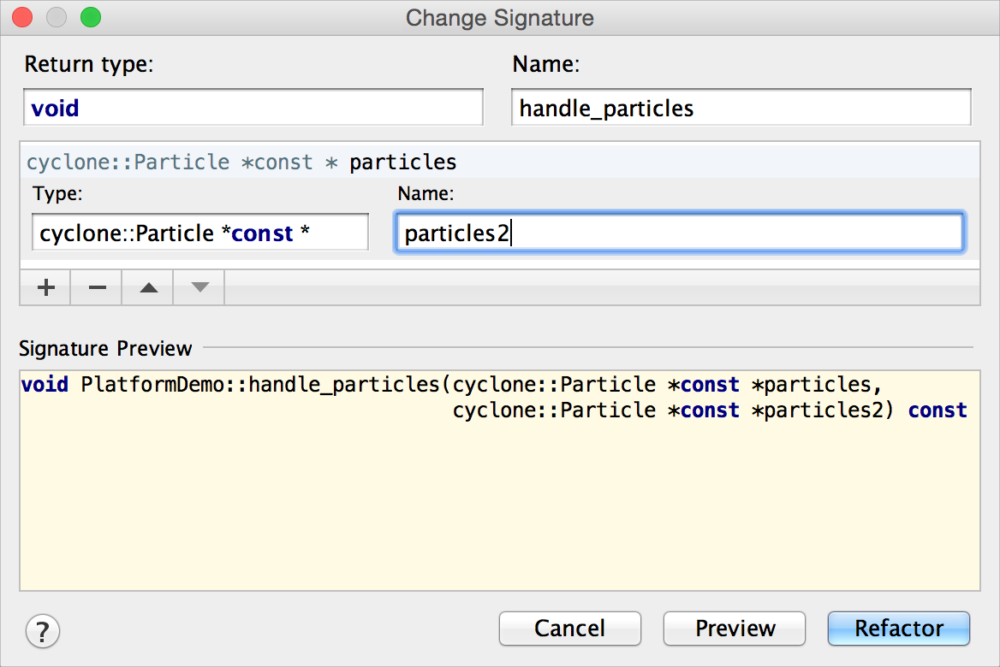
By the way, entering a new parameter type in this dialog is very easy thanks to code completion. After I click Refactor, CLion updates the signature and all the usages as well, substituting the default value for the given type, which in this case is
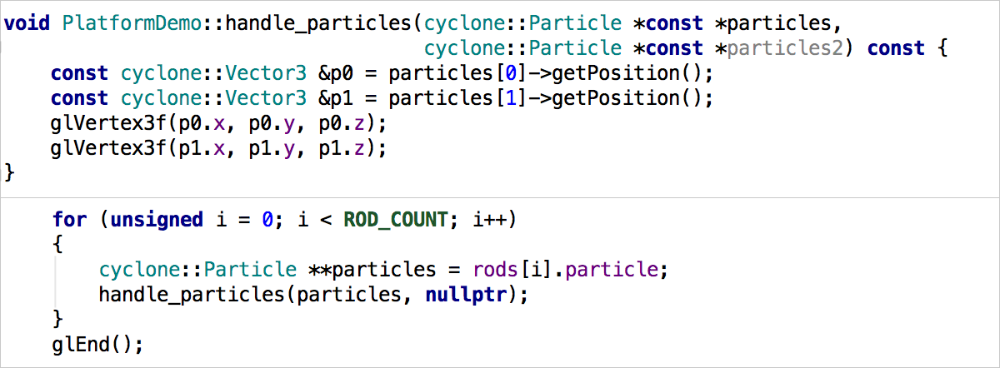
What if I decide to reorder the parameters while doing Change Signature? Sure enough, their order will be updated in all the usages accordingly:
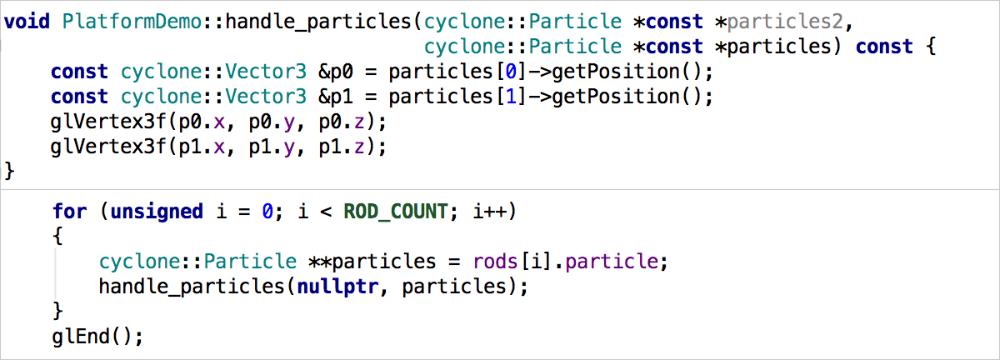
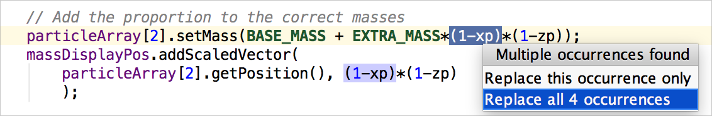
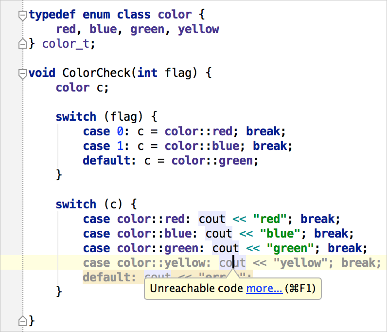
Omnipresent C/C++ specific errors, such as ‘=’ in conditions, won’t get past CLion either:
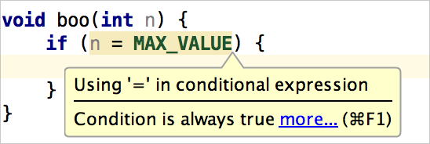
All these assists work as you type, sparing you the effort of running some additional code analysis tool over your project.
CLion integrates the GDB backend, providing all the essentials in its UI and extending your debugging experience with some extremely useful features. For example, any time you type a variable name to watch, or an expression to evaluate, you can take advantage of code completion. A dedicated tool window shows all the details on the current state of your program. And here’s the cherry on top: when you debug, the IDE shows you variable values next to their declarations, right there:
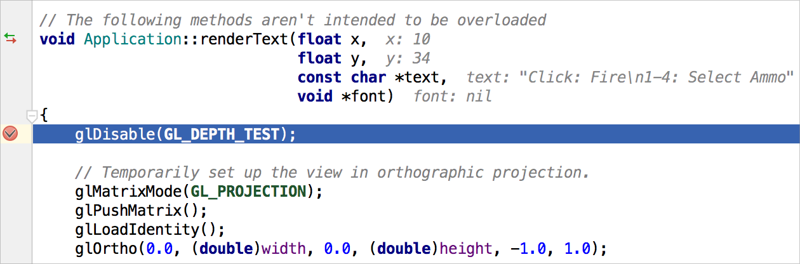
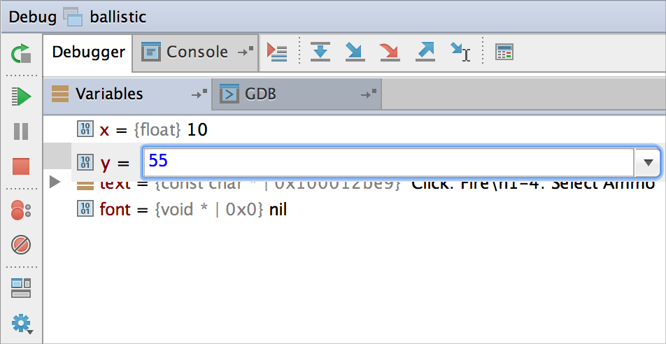
We can now continue the same session, but with the new value 55 assigned to
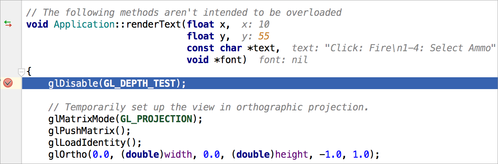
Try these tips in CLion and see if they help you become more efficient and productive!
Before we start, let me introduce you to CLion, a new cross-platform IDE for developing in C and C++, created by JetBrains. It natively supports C and C++, including the C++11 standard (with some small limitations), libc++ and Boost. It correctly handles macros and templates and can work with GCC or Clang (on Windows you’ll need either MinGW/MinGW-w64 or Cygwin), GDB as a built-in debugger, and CMake as a build system and project model. In addition to C/C++, you can also use JavaScript, XML, HTML and CSS with the same level of code editing and transformation features such as syntax highlighting, analysis, completion, navigation, and refactorings.
1. Smart completion knows what you need
In the first place, we all need an editor. Code completion is essential: we just start typing a symbol (variable, function, type, class name) and the editor shows us a list of matching suggestions. That’s simple, but do we really need all these options in the sample below?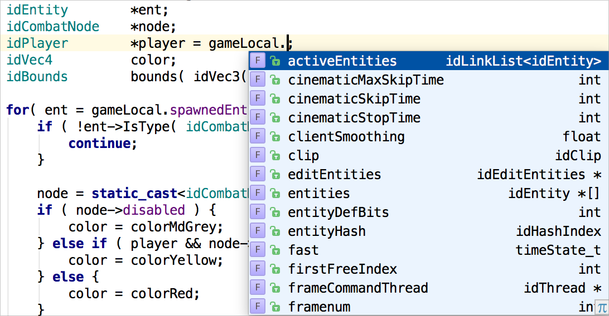
Very often we need only smth with type
idPlayer * here. And that’s exactly what CLion’s smart completion does! It intelligently filters the suggestions based on the code context: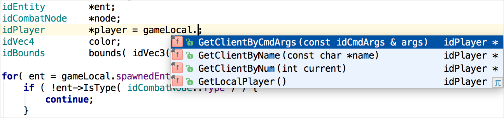
Oh, and if only one possible option is found, you’ll get it completed immediately!
2. Use first, define later
When we have a brilliant idea in mind, we don’t want to spend time on something routine and mundane. Suppose you’ve used a function that is not implemented or not even declared yet. CLion highlights it red. Should you stop right here to implement this function? Not at all! Ask CLion to generate a stub and come back to it later. Simply press Alt+Enter: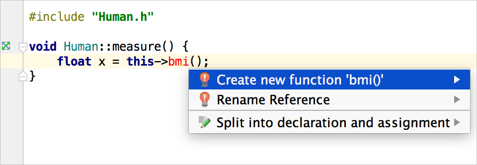
The declaration and definition will appear immediately in your code:
The same works for variables and class names:
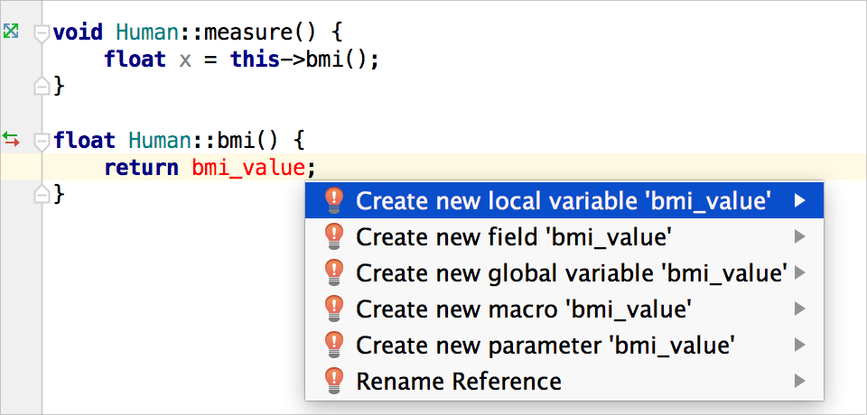
3. Live templates for your favorite or most used pieces of code
How to get a loop or iterate over a range (in C++11 style) by typing just a few symbols? Typefor and press Tab to get a loop; or type iter or itit and then press Tab: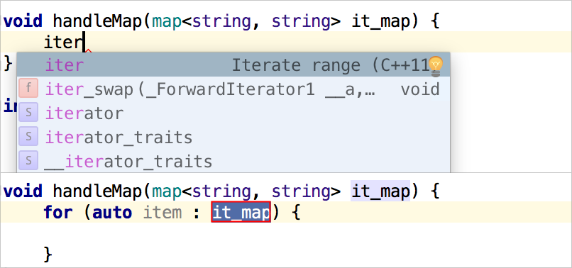
To go deeper, CLion lets you create custom Live Templates or ‘Surround With’ templates (which quickly wrap a selected code with a construct). For example, here’s a quick way to get a class that inherits from another existing class:
After adding a new ‘cp’ template, I can type
cp in the editor: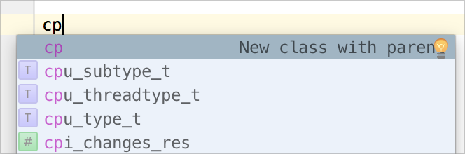
The template description is shown in the completion drop-down list. By pressing Tab I got my template expanded. Now I can provide a new class name, and then select a parent class and a modifier for it from the completion list:
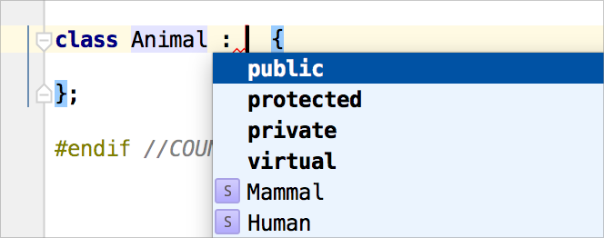
Voila! We got a new class.
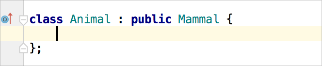
Of course you can generate more complicated templates, possibly including a
$SELECTION$ variable to get the ‘Surround With’ template.4. Follow the hierarchal view
I see developers reading code a lot more often than writing it. Before we add new code or update existing stuff, we usually perform a deep and detailed investigation of our existing code base. (Unless you start a project from scratch, which doesn’t happen very often.) So, a lot of the time, being productive equals finding my way through the code base as quickly as possible.To that end, CLion provides you with a wide range of code navigation options:
- use standard goto declaration/definitions features;
- jump to a related symbol, recent files, or the place you edited last;
- search for any class, file or symbol by its name;
- use the context search with Find Usages;
- navigate through the current file using the File Structure view;
- and benefit from several hierarchical views, including Call Hierarchy, Type Hierarchy and Imports Hierarchy.
Call Hierarchy is my favorite. It lets me see the whole call stack with all the branches in details. Looks so simple, isn’t it? With a single click you can navigate to the appropriate place in editor, or use Autoscroll to Source to make it even quicker:
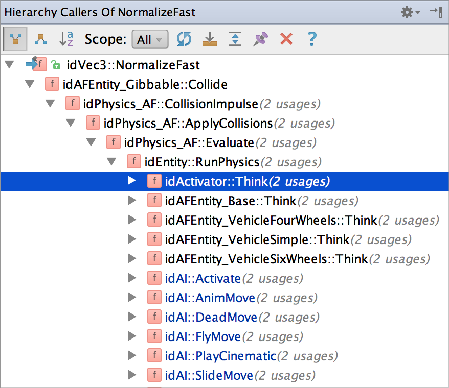
5. Reorder or add parameters—and the IDE will take care of the usages
Refactoring is a powerful technique that helps us make our code clearer, higher-quality, and more maintainable. Some IDEs assist you in this practice by offering a few automated code refactorings. CLion has many, ranging from the most popular Rename to more complicated ones like Change Signature, Extract Function or class, Inline, and more. You can always rely on CLion to keep your code correct when refactoring changes are applied.Let me illustrate exactly how reliable it is. Assume we have this function and its usage:
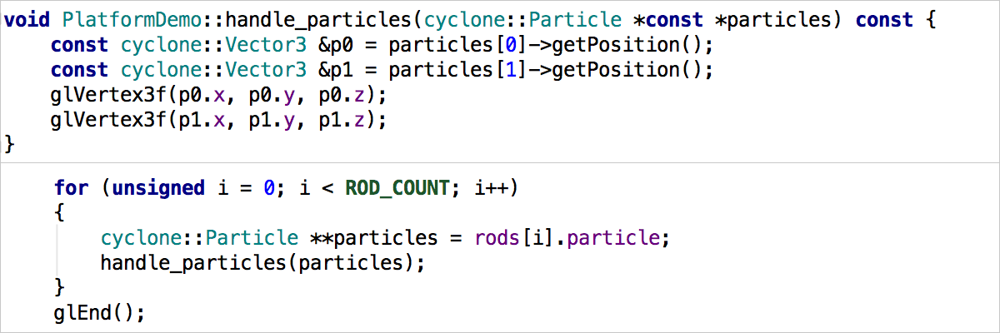
To add an extra parameter to this function, I’ll use the Change Signature refactoring:
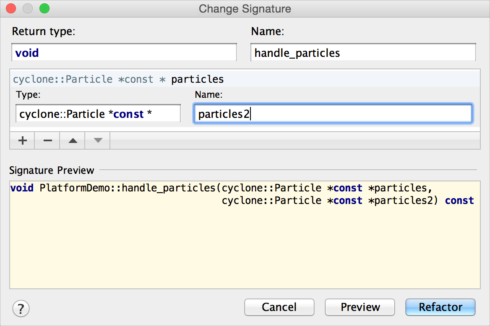
By the way, entering a new parameter type in this dialog is very easy thanks to code completion. After I click Refactor, CLion updates the signature and all the usages as well, substituting the default value for the given type, which in this case is
nullptr: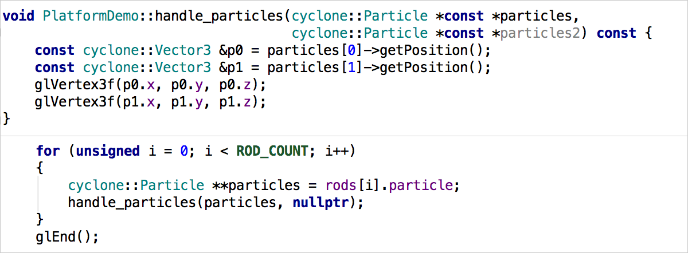
What if I decide to reorder the parameters while doing Change Signature? Sure enough, their order will be updated in all the usages accordingly:
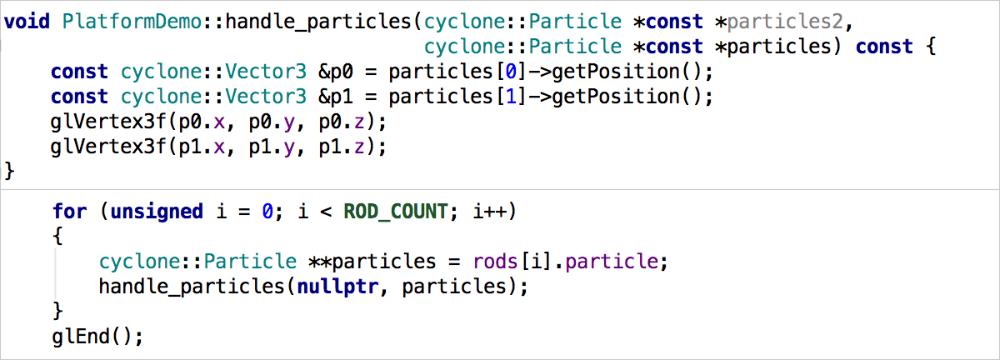
6. Extract everything, with plenty of options
Extracting a piece of code into a separate function is a very popular refactoring, but how about others like Extract Typedef, Define, Variable, Parameter or even a Subclass? When you use these refactorings in CLion, plenty of small but useful details make your experience better. For example, you can change all occurrences (if more than one exists) when extracting a constant or variable; declare a constant or parameter as static; use auto type while extracting a variable; and so on and so forth: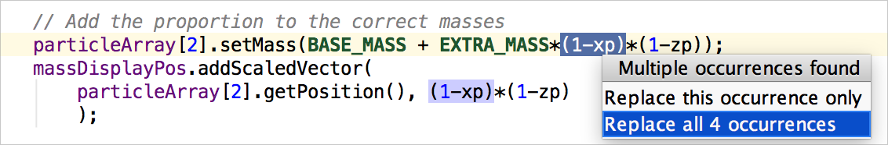
7. Unused code? '=' in conditions? Not a problem!
Following Murphy's Laws for computers, every non-trivial program has at least one bug. But let's do our best and fix as much as we can. In our pursuit to localize and hopefully fix bugs, CLion constantly monitors your code for potential errors. Any suspicious piece of code is highlighted in the editor, and possible quick-fix options are suggested for you to resolve the issue. To view them simply press Alt+Enter. The IDE also performs complete Data Flow Analysis to detect unused or unreachable code for you: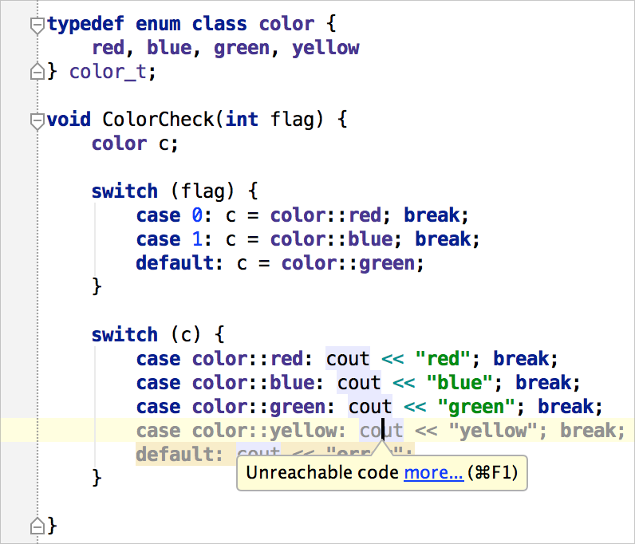
Omnipresent C/C++ specific errors, such as ‘=’ in conditions, won’t get past CLion either:
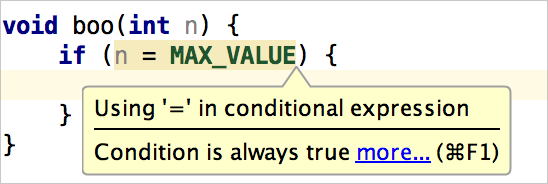
All these assists work as you type, sparing you the effort of running some additional code analysis tool over your project.
8. Debug the easy way, with variable values viewable right in the editor!
A key advantage of an IDE over a plain text editor is the debugging experience. While you can always run a stand-alone debugger separately, debugging inside an IDE saves you time and provides various additional functionality.CLion integrates the GDB backend, providing all the essentials in its UI and extending your debugging experience with some extremely useful features. For example, any time you type a variable name to watch, or an expression to evaluate, you can take advantage of code completion. A dedicated tool window shows all the details on the current state of your program. And here’s the cherry on top: when you debug, the IDE shows you variable values next to their declarations, right there:
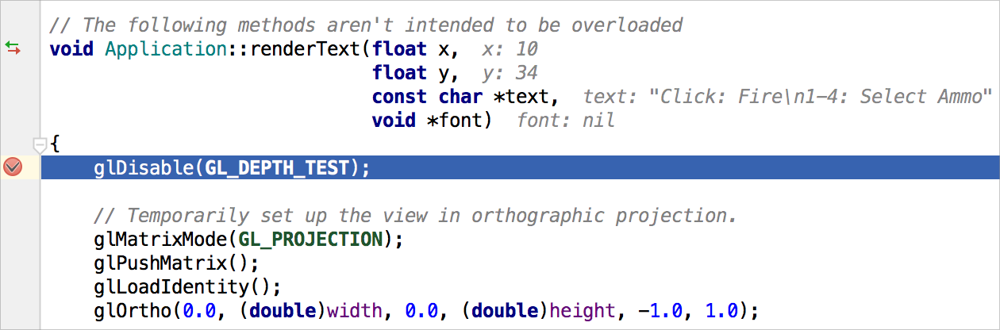
9. Changed your mind while debugging? Don’t restart—Adjust variable values on the spot!
Debugging is about understanding the data and control flows in your program. Sometimes you need to check multiple variable values, for example to follow a different execution branch. Don’t waste your precious time starting over—adjust variable values on the spot, in the same debug session: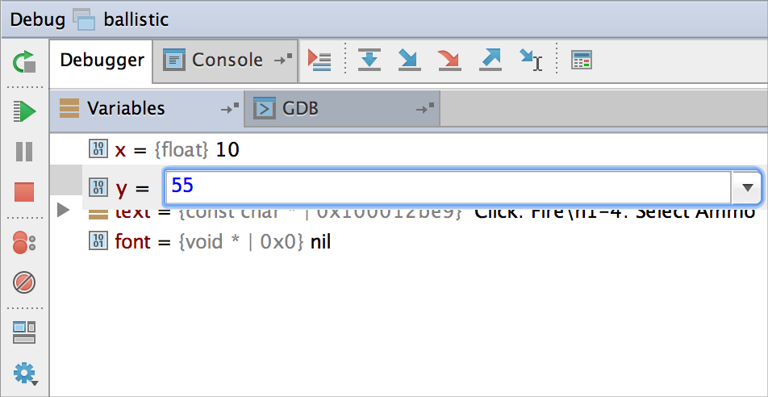
We can now continue the same session, but with the new value 55 assigned to
y. As we’ve noticed before IDE shows the variable values next to their declarations in the editor, highlighting the changes applied: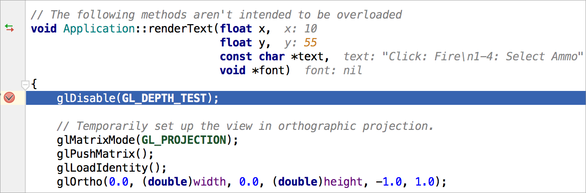
10. All the tools you need are on board—No switching necessary!
IDE stands for Integrated Development Environment, and using one means you no longer have to switch between multiple tools as you work, like a separate VCS application, an issue tracker in your browser, or even a terminal. All these features are integrated into CLion IDE so you can focus on coding with minimum distraction.Try these tips in CLion and see if they help you become more efficient and productive!